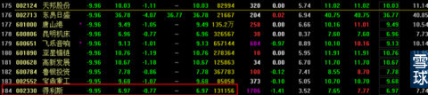
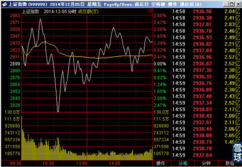
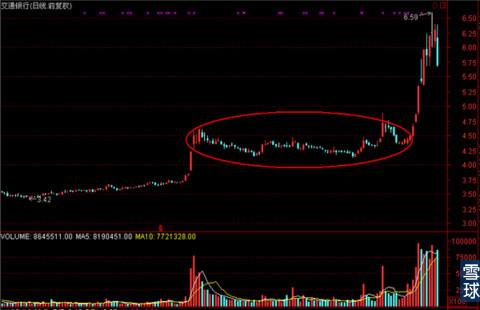
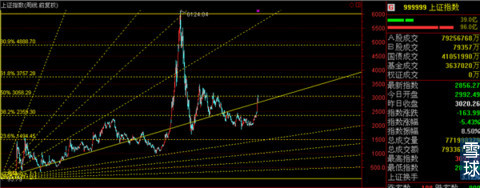
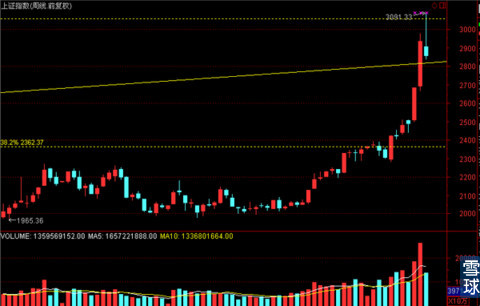
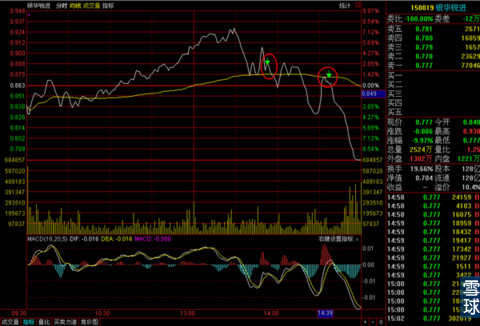
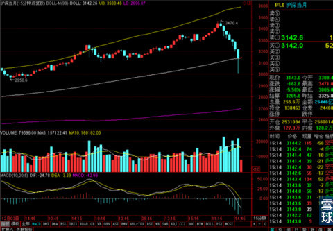
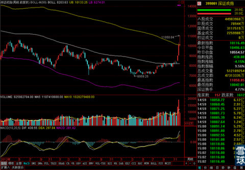
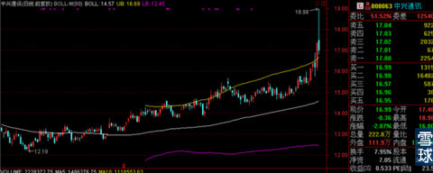

我知道大家现在都着急等着看今天的笔记，但是没办法我必须要等到沪指期货也收盘之后才能动手开始写。昨天上证指数低开之后大涨，在涨停股票家数达到90多只的同时有不少股票跌停，今天从上午的指数大涨，但是大盘中个股涨跌比2：1到尾盘全线暴跌，最后收盘跌停家数到达180多家。

从周五到昨天，很多小伙伴对我进行调仓换股和几次看空言论有点疑惑。今天的走势证明了我的担心不是多余的。
个人认为现在的情况应该还是市场在大幅上涨之后，正常进行暴力洗盘的动作，暂时还没有观察到牛市结束，整体进入下跌的明确信号。
既然认为是洗盘的概率较大的话，那么就有必要讲一讲市场主力洗盘的套路。基本上就是三板斧。第一招，剧烈震荡，从上周五的走势开始，剧烈震荡的动作就极为明显，这已经是市场主力在开始洗盘的标准动作了，所以我才要在周五午间收盘之前，赶紧浏览一遍大盘中还有什么股票启动之后没有大幅上涨，找防御性板块为可能到来的下一步洗盘动作做准备，同时出清商品B，买入小部分防御性股票。

市场主力的第一招针对就是大多数跑进来追涨的超短线盘，这类人群对市场的剧烈震荡最敏感，第一招在周五，周一和今天上午连续出现三次。基本上最机灵的超短线追涨盘都被洗的差不多了。
第二招，巨量大幅暴跌，洗掉超短线逐利盘之后，主力的下一个目标就是中线打算持有时间比较长的投资者，用大阴线快速杀跌，直接毁灭掉帐号上的浮动盈利。经历几次震荡对调整心理准备不足的中线投资者基本上会中招。
第三招，别人坐着你站着，别人吃肉你看着。暴跌之后会再次进入横盘整理期，这时候只有之前别少数人关注的股票开始快速上涨，打定主意死握股票的投资者在面对2-3周，自己的股票纹丝不动，别人的股票鸡犬升天的情况，会有很多人选择换股，这一换，基本市场主力要的筹码和洗盘效果就都达到了。比较典型的就是银行股在7月底大涨之后，整整两个月基本不动，这时候指数上涨，热门股票飙涨，大多数交了筹码出去，进行换股之后，银行股拔地而起。

市场主力是有大面积影响市场的能力，但是并不意味着该来的调整不会再来了，只是一再的把这个时间押后，在投资者最希望回调的时候拉升，在投资者苦等调整不来，渐渐松懈下来的时候暴跌调整。他们不能改变市场的运行规律，只能是利用他们的能力打出时间差，影响市场参与者心理。
所以，在周一我看到市场主力拿出第一招的时候，我就开始为有可能要出现的第二招做准备了，这是其一。
其二，我在周末复盘的时候发现，3000点整数关口的意义绝对不同于之前的2800.2900等整数关口，从任何角度来看，都是一个很有争议和悬念的位置。于是我用江恩角度线和黄金分割线找了一下关键点。

这个整体的画图结果，

这是近期放大之后的效果，我在周未的番外篇来写了我对整个12月份走势的担忧和一些预测可能出现的情况。其中有一幅图就是在角度线和50%分割线之间的三角形中呈现整理走势的预测。大家可以回头看一下。
所以在今天上证指数冲过图中虚线，之后回调到虚线之下的时候，我就买了一半的银华锐进，成交价0.888。后来反弹到日均线之后没上去，马上卖剩下的一半中的一半，成交价0.858。请原谅我个人的恶俗趣味，挂单尾数尽量有8的习惯。

但是最后走的还是不坚决，留了1/4被拍在跌停价上了，还在买的便宜，不伤筋动骨。
那么这次调整有可能调到什么位置算结束腻？

我们可以看一下股指期货的情况，股指期货今天在15分钟线上得到了暂时的支撑，这个支撑效果能坚持多久我也说不好。但是目测短期极限也就是30分钟线中轨2727了，因为这样暴涨上来，基本不会V字反转，是要花时间做头部出来的，所以短期持续性疯狂下跌的可能比较小。
再看一眼深市的周线，

现在周线上轨对指数有支撑，而且最近深市暂时强于股市，这就是为什么我昨天公布出来的新晋自选股除小伙伴发现的两面针之外都是深市股票了吧！
像南玻A，中兴通信，潍柴动力这几个虽然今天冲高回落，但是抗跌性还好，今天进的急的小伙伴可以盯紧日线上轨的支撑进行操作。

后面几个交易日我会用银华锐进减下来的现金找机会购买一点潍柴或者中兴，南玻A视情况选择是否加仓。大家体会一下为什么我昨天不建议大家第一时间去抢进这几只低位潜伏股了么？因为要等等看市场主力的动向和回调力度，再一个看看有没有回踩重要支撑线的动作再动手也不算晚，因为他们还没进入强势上涨期，不需要那么急着去追进。
最后说一下交通银行这类股票，我之前说过，调整和洗盘往往要爆掉一部分中线持有者信心，主力才能满意。所以这类股票的暴跌并不奇怪。现在仍然低于净资产水平，之前打定主意要中线持有很长时间的，可以留待观望。大盘确认没希望再出手也来得及。只要不被之后长期尴尬横盘干扰就好。
交通银行上一次回踩日线上轨又拉一波的截图我上过，不知道大家是不是还有印象。关于指数的暴跌我也上过之前998之后上攻途中几次单日跌幅5%，或者8%的图，大家可以去翻看一下，理一理思路。
剩下的事就得走着瞧了，总之我不觉得市场主力苦等4年，现在有机会了会很轻易的放弃，画好支撑线和止损位，和他们耗一段时间看看再说。
 |
我知道大家现在都着急等着看今天的SaiLv 2014-12-09 16:08:29 |
Copyright © 1996-2014 SINA Corporation All Rights Reserved.